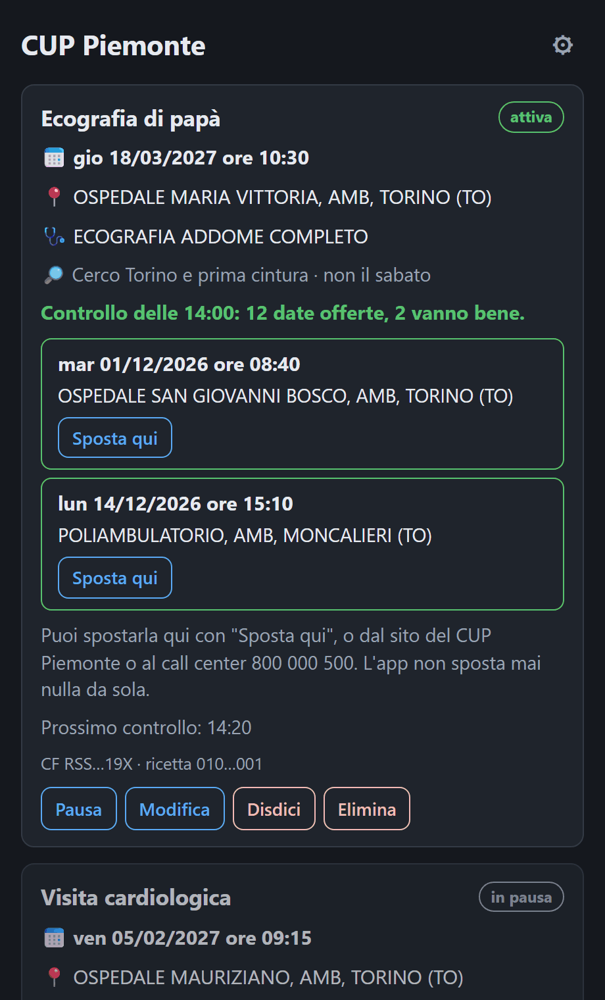

CUP Piemonte
CUP Piemonte
Una data prima per la tua visita, senza ricontrollare il CUP ogni ora
L'app controlla il portale CUP Piemonte ogni 20 minuti e ti avvisa con una notifica appena si libera una data prima della tua prenotazione. Sposta la prenotazione solo quando lo chiedi tu.
Scarica l'appWindows, macOS e Linux · gratuitaGratuita e open source · Windows 10 e 11, macOS, Linux
Sei sul telefono: l'app è per il computer. Apri questa pagina dal PC, oppure usa il bot Telegram.


Scarica
Linux
64 bit (x86_64).
.debUbuntu 22.04+, Debian 12+, Mint .rpmFedora, openSUSE .AppImagetutte le altreSomme SHA-256 per controllare i file: SHA256SUMS.txt · Tutte le versioni: pagina Releases
Al primo avvio
Gli installer non sono firmati, quindi il sistema avvisa una volta
La firma digitale costa e richiede un'identità registrata. Il codice è pubblico e gli installer li costruisce GitHub a partire da quel codice, dopo averli installati e provati.
Windows ("Windows ha protetto il PC"): premi Ulteriori informazioni, poi Esegui comunque.
macOS ("non può essere aperta" o "è danneggiata"): trascina l'app in Applicazioni, poi in
Impostazioni di Sistema > Privacy e sicurezza premi Apri comunque. Se il pulsante non c'è, nel Terminale:
xattr -dr com.apple.quarantine "/Applications/CUP Piemonte.app"
Linux: l'AppImage va resa eseguibile (chmod +x o dalle proprietà del file).
Come funziona
- Aggiungi la ricetta: un nome a piacere, codice fiscale e numero della ricetta elettronica (NRE) di una visita già prenotata sul CUP Piemonte.
- Scegli dove cercare (la stessa sede, il tuo comune, Torino e prima cintura, la provincia o dove propone il CUP) e i giorni da evitare.
- L'app controlla ogni 20 minuti, anche con la finestra chiusa (resta nella barra di sistema). Quando esce una data prima arriva una notifica con data, ora e luogo.
- Se ti va bene premi Sposta qui: l'app mostra la data attuale e quella nuova e sposta solo dopo il tuo Sì, poi controlla sul portale che lo spostamento sia andato.
I dati restano sul tuo computer
Codice fiscale e ricetta vanno solo al portale CUP, come quando lo usi dal browser. Sul computer sono cifrati, con la chiave nel portachiavi del sistema. Nessun server, nessun account, nessuna telemetria.
Non sposta mai niente da sola
Ogni spostamento o disdetta parte solo da un tuo clic e chiede conferma mostrando data, ora e luogo. Se l'esito non è certo, l'app lo dice e ti chiede di controllare sul sito del CUP.
Rispetta il portale
Un controllo ogni 20 minuti per ricetta, non di più: ogni controllo apre "Sposta appuntamento" come faresti tu.
Leggera
Pochi MB, usa il browser già presente nel sistema. Si può far partire con il computer dalle impostazioni.

Domande
È un'app ufficiale? No. È un progetto indipendente e gratuito, non collegato alla Regione Piemonte né al CSI Piemonte. Usa il portale pubblico cup.isan.csi.it come lo useresti tu.
Funziona con una ricetta non ancora prenotata? No, l'app cerca date prima di una prenotazione che esiste già. Il bot Telegram ha anche una funzione sperimentale per le ricette mai prenotate.
Posso seguire più ricette? Sì, anche di familiari, ognuna con la sua zona e i suoi giorni.
Come la aggiorno? Scarichi la versione nuova da questa pagina e la installi sopra la vecchia: le ricette restano.
Ho trovato un problema. Il codice e la documentazione completa sono su GitHub.